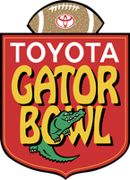

In good company
Twenty-five years in the business of football, or next to Tim Tebow, Chris Tomlin and Governor Ron DeSantis.
The organizations behind the logos on the homepage, and a few more, newest first, with what Erik did at each one. Roles and dates are from his CV; the stories are his to add.
-

Florida Family Voice
Chief Executive Officer 2025 to present
For more than 20 years Florida’s defender of life, marriage, family and religious liberty, formerly the Florida Family Policy Council. Erik leads its vision, strategy, staffing and fundraising, and is Florida’s liaison to the alliance of 38 state policy councils and the national Church Ambassador Network.
-

The Church of Eleven22
Ordained Pastor 2025 to present
Ordained in June 2025 at The Church of Eleven22 in Northeast Florida.
-

Executive Office of the Governor, State of Florida
Florida’s first Governor’s Liaison for Faith and Community 2019 to 2025
Recruited to be the sole voice for faith and community to Florida’s 20,000 faith institutions and 110,000 nonprofits, and their voice back to the Governor. In under six years the network grew to 2,000 faith institutions and 6,000 nonprofits serving vulnerable Floridians in all 67 counties: 28,000 children served in three years, and a reduction of more than 8,000 children in foster care. He created the GFCI Red Phone and the Florida Foster Information Center, helped launch Hope Florida and served as its Executive Director in 2025.
-

CarePortal
First statewide implementation during his years in the Governor’s office
The care-sharing platform that lets a local church meet a need entered by a state employee. Under Erik’s network it was rolled out across an entire state for the first time, with churches meeting needs in all 67 counties.
-

For Others
Founding board member and founding interim president 2018 to 2024
Chris Tomlin’s foundation, a national nonprofit built to end the foster care crisis in the United States. Erik helped found it through its vision, structure and first staff, and as president from 2020 to 2022 ran operations, fundraising, staff, budget and marketing.
-
Hat n Hoodie Consulting
Founder 2017 to present
Founded as Mercy Seeds Consulting. Advice on strategy, vision, fundraising, culture, staffing and focus for people and organizations with real influence. The Consulting page has the rest.
-


Auntie Anne’s and Planet Smoothie
Owner and franchisee 2017 to 2024
A shared storefront in St. Augustine, and an Auntie Anne’s food truck across Northeast Florida that he sold in 2021.
-

Joey’s Custard
Independent owner, Sanibel Island 2021 to 2022
Open until Hurricane Ian closed it in September 2022.
-

Tim Tebow Foundation
Founding President and Executive Director 2011 to 2017
Built the foundation’s worldwide work: the Tebow CURE Hospital in the Philippines, the W15H wish-granting program, Timmy’s Playrooms in children’s hospitals and orphanages, and a network of hundreds of churches from 39 denominations. He also created and built four private companies for Tim Tebow and his related entities.
-

Night to Shine
Started and built it at the Tim Tebow Foundation
A prom for people with special needs, now held in more than 800 churches in more than 30 countries on one night each year.
-

Flagler College
Adjunct Professor, Sales in Sports Management 2008 to 2011
Taught SPM 350 while running the Gator Bowl’s sales and marketing.
-

Gator Bowl Association
Intern to Vice President and Chief Marketing Officer 2000 to 2011
Started as an intern in 2000, then Director of Ticket Operations, Director of Promotions, Founding Director of the ACC Football Championship, Director of Sales and Marketing, and from 2010 Vice President and Chief Marketing Officer.
-

ACC Football Championship
Founding Director 2004 to 2008
Built and ran the first three ACC Football Championships after the conference expanded to twelve teams, as chief liaison to the ACC, Dr Pepper, ABC Sports and 90 game sponsors.
-

University of Florida
Studied here Florida Blue Key
Where it started. A member of Florida Blue Key.
Boards and councils
- 2019 to present
Fellowship Adventures
Executive board member, and Chairman of the Board since 2020. Hunting and fishing trips for ministry leaders to find rest and community.
- 2019 to present
Florida’s Statewide Faith and Community Advisory Council
Member, and Chairman from 2022 to 2025
- 2019 to 2024
Florida’s Foundation for Correctional Excellence
Board member
Every one of these has a story
Invite Erik to speak